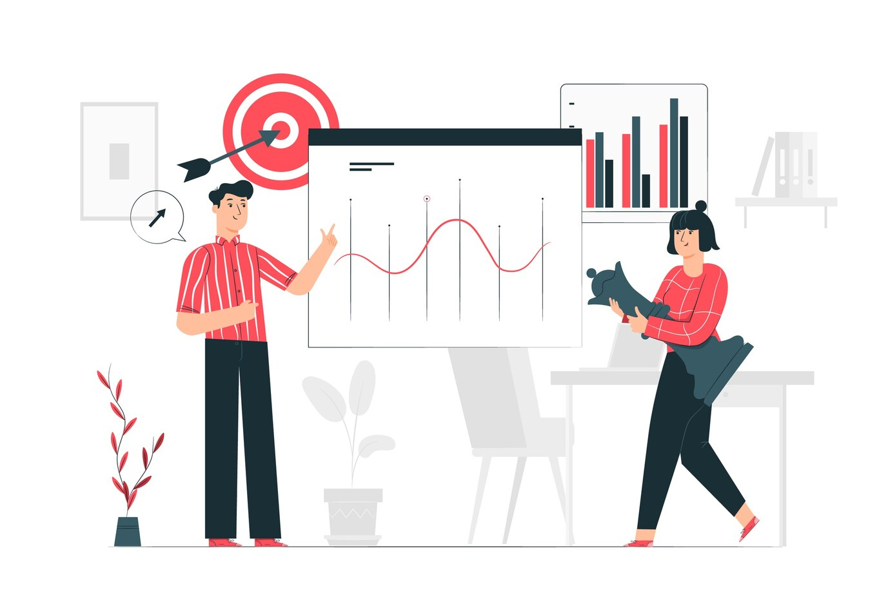

Onze Diensten
Bij Authentic Social Studio leveren we creatieve en strategische oplossingen die jouw merk versterken. Hieronder ontdek je onze kernexpertises.

Video Productie
Beelden zeggen meer dan duizend woorden. Wij produceren krachtige video's die raken. Voor brands, events en social media. Van script tot edit: wij brengen jouw verhaal tot leven met cinematografische kwaliteit.- Storytelling op maat
- Professionele cameraopnames
- Snelle edits met dynamische animaties

Social Media Strategie
Online aanwezig zijn is één ding. Opgemerkt worden is iets anders. Wij creëren contentplannen die passen bij jouw doelgroep en platform. Met oog voor visuals, trends en conversie.
- Contentkalenders en planning
- Design en copywriting afgestemd op merkidentiteit6
- Analyse van data en optimalisatie
Web Design & Development
Jouw website is je digitale visitekaartje. Wij bouwen maatwerk webdesigns die niet alleen mooi ogen, maar ook resultaatgericht werken. Van wireframes tot geoptimaliseerde performance, elk detail telt.
- Responsief design voor mobiel en desktop
- Strategische UX/UI aanpak
Niet alleen zichtbaar. Onvergetelijk.
Je merk verdient meer dan standaard. Het verdient impact, beleving en stijl. Laat je strategie tot leven komen met ons team van creatieve geesten.
Plan een gratis kennismaking